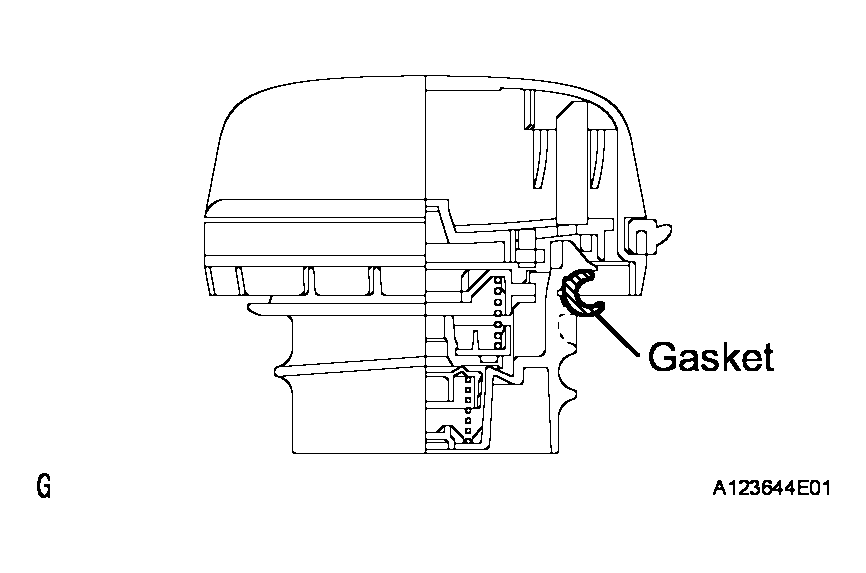

Home
>>
Scion
>>
2006
>>
xB Standard
>>
Repair and Diagnosis
>>
Engine Mechanical
>>
Auxiliary Emission Control Systems
>>
Emission Control
>>
Fuel Tank Cap
>>
On-Vehicle Inspection
On-Vehicle Inspection
CHECK FUEL TANK CAP ASSEMBLY
Visually check if the cap or gasket is deformed or damaged.
Fig 1: Identifying Fuel Tank Cap Gasket

Courtesy of © TOYOTA, LICENSE AGREEMENT TMS1002